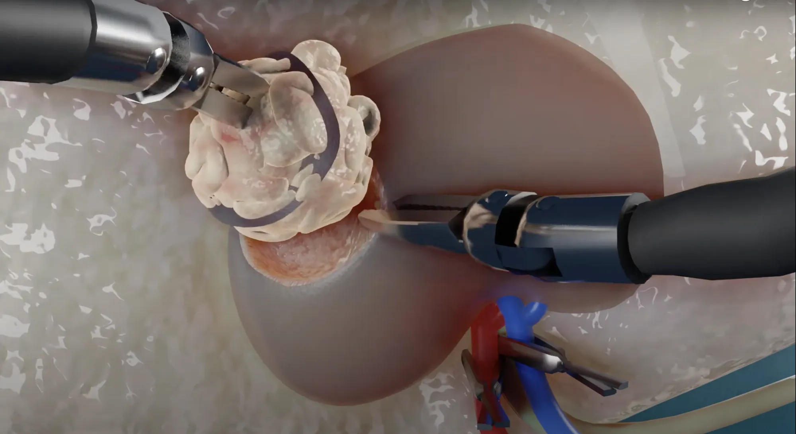
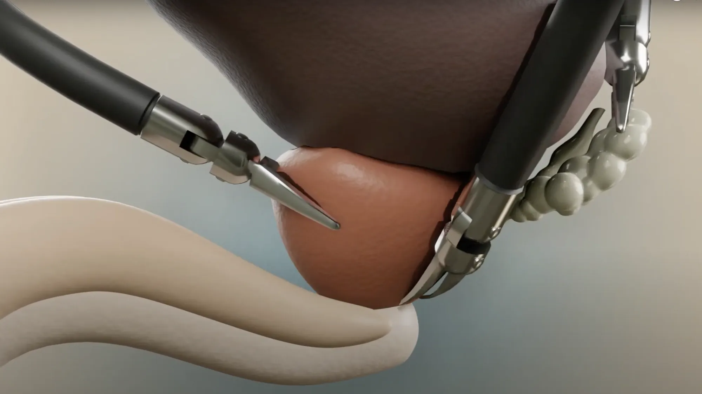
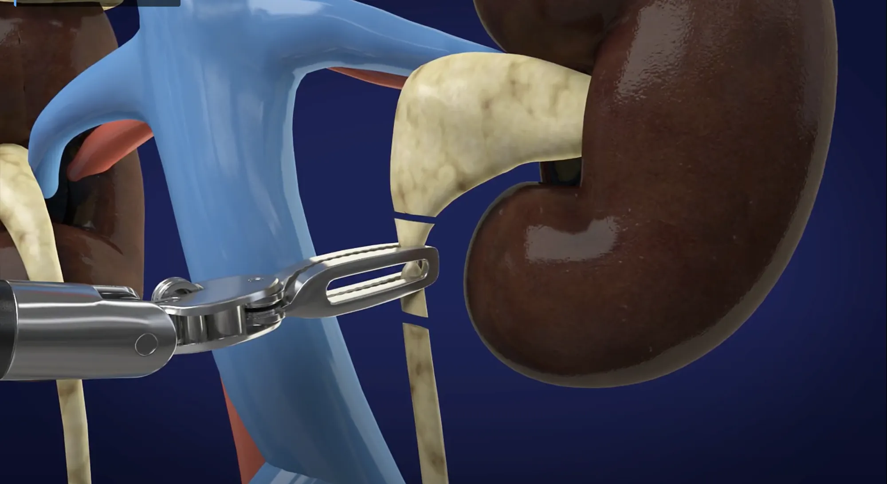
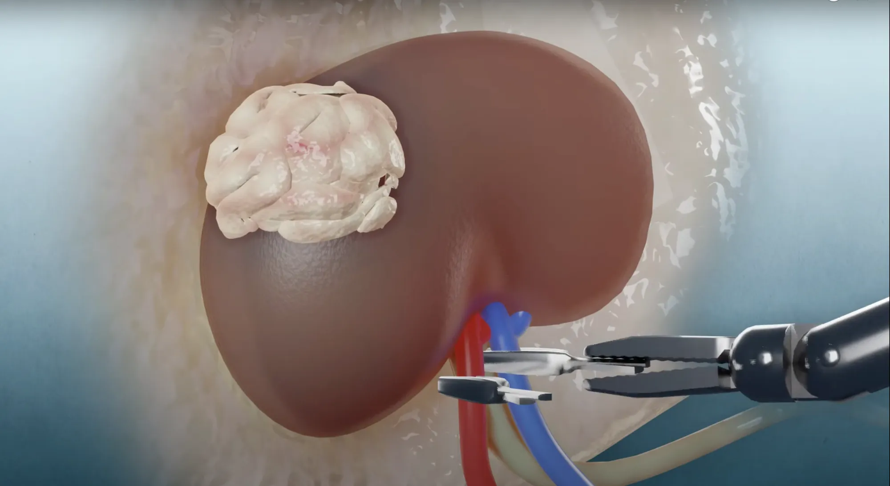
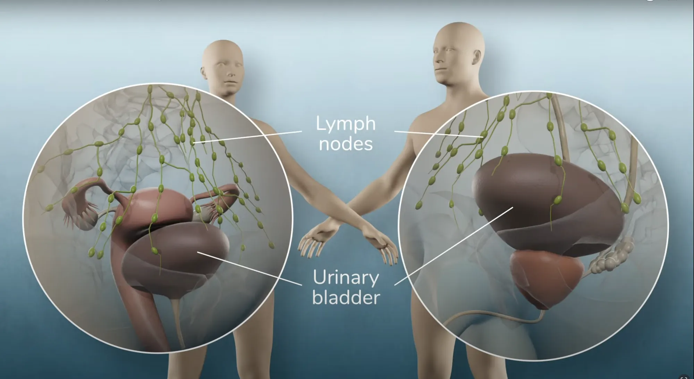

Reconhecida como uma das técnicas menos invasivas disponíveis, a cirurgia robótica, também conhecida como cirurgia assistida por robô, representa uma abordagem cirúrgica videolaparoscópica de última geração. Nesta técnica, um cirurgião altamente qualificado controla um robô sofisticado para realizar procedimentos complexos com extrema precisão. Diferentemente da cirurgia convencional, que requer grandes incisões para acesso direto aos órgãos internos, a cirurgia robótica utiliza pequenas incisões para a inserção dos instrumentos cirúrgicos.
As vantagens proporcionadas por essa abordagem inovadora incluem magnificação de imagens, precisão e destreza, resultando em procedimentos cirúrgicos mais seguros e eficazes. O sistema robótico oferece uma visão tridimensional de alta definição, proporcionando ao cirurgião uma visualização detalhada e ampliada do campo cirúrgico. A tecnologia robótica permite movimentos extremamente precisos e controlados, o que reduz significativamente a perda de sangue durante o procedimento e minimiza a dor pós-operatória. Além disso, pacientes submetidos à cirurgia robótica geralmente experimentam um tempo de internação mais curto e uma recuperação mais rápida, permitindo um retorno mais breve às atividades normais.
A visão tridimensional de alta definição e a precisão oferecidas pelo sistema robótico são particularmente benéficas em procedimentos envolvendo órgãos complexos e delicados, como nas cirurgias urológicas. A cirurgia robótica tem sido amplamente utilizada na urologia há mais de 20 anos, proporcionando uma abordagem avançada e precisa para o tratamento de diversas condições urológicas.
A prostatectomia radical é um procedimento cirúrgico utilizado para tratar o câncer de próstata. Durante a cirurgia, a próstata é removida completamente, juntamente com alguns tecidos circundantes e, em alguns casos, os linfonodos próximos.

02
Nefrectomia parcial
A nefrectomia parcial é um procedimento cirúrgico destinado à remoção de uma parte do rim afetada por tumores ou outras lesões, preservando o tecido renal saudável. Este método é frequentemente recomendado para tratar câncer renal em estágio inicial, permitindo a manutenção da função renal.

03
Nefrectomia Total
A nefrectomia total é um procedimento cirúrgico que envolve a remoção completa de um rim. Este procedimento é geralmente indicado para tratar tumores renais grandes, doenças renais graves ou lesões traumáticas que comprometem a função do rim.

04
Pieloplastia
A pieloplastia é um procedimento cirúrgico realizado para corrigir obstruções na junção ureteropiélica, onde o rim se conecta ao ureter. Esta condição pode causar dor, infecções urinárias recorrentes e danos ao rim devido ao acúmulo de urina. A pieloplastia visa restaurar o fluxo normal de urina, aliviando os sintomas e prevenindo complicações futuras.

05
Ressecção de Tumores
A ressecção de tumores é um procedimento cirúrgico essencial para a remoção de massas tumorais em órgãos do sistema urinário, como a bexiga, próstata e rins. Este tratamento é fundamental para eliminar células cancerígenas, aliviar sintomas e prevenir a progressão da doença.

06
Cistectomia
A cistectomia é um procedimento cirúrgico realizado para remover parcial ou totalmente a bexiga, geralmente indicado em casos de câncer de bexiga avançado ou outras condições graves que afetam a função do órgão. Este tratamento pode ser essencial para eliminar células cancerígenas e prevenir a disseminação da doença.
J
Jorgesecretário virtual 24h · online
Olá! 👋 Eu sou o Jorge, secretário virtual do Dr. Marco Corsetti. Como posso te ajudar? Posso agendar sua consulta ou tirar dúvidas.